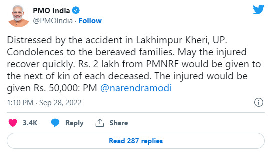

Lakhimpur Kheri Accident: In the video, a teary-eyed Roshan Jacob enquires about the health of a child injured in the accident while directing officials to ensure his treatment.

New Delhi : At least ten people were killed and 41 were injured in a truck-bus collision in Uttar Pradesh's Lakhimpur Kheri on Wednesday
Out of the injured, 12 were shifted to a trauma centre in Lucknow while the others are undergoing treatment at the district hospital.
In a video that has gone viral on social media, Lucknow Divisional Commissioner Roshan Jacob can be seen breaking down while interacting with the families of the injured. In the video, a teary-eyed Ms Jacob enquires about the health of a child injured in the accident while directing officials to ensure his treatment.
Born in Thiruvananthapuram, Ms Jacob is a 2004-batch IAS officer. She was under the spotlight two weeks ago when a video of her inspecting waterlogged streets of Lucknow went viral on social media.
According to UP Police, the accident took place on the Aira bridge on National Highway 730. A bus was on its way to Lucknow from Dhaurhara when it collided with a truck coming from the opposite direction.
President Droupadi Murmu and Prime Minister Narendra Modi both expressed their grief and offered their condolences to the families of the victims.
"Deeply saddened by the news of the death of many people in a road accident in Lakhimpur Kheri, Uttar Pradesh. I express my deepest condolences to the families of those who lost their loved ones in the accident and the injured a speedy recovery," a message on the official Twitter handle of the President said.

"Distressed by the accident in Lakhimpur Kheri, UP. Condolences to the bereaved families. May the injured recover quickly. ₹ 2 Lakh from the PMNRF will be given to the next of kin of each dead. The injured will be given ₹ 50,000," said PM Modi.
